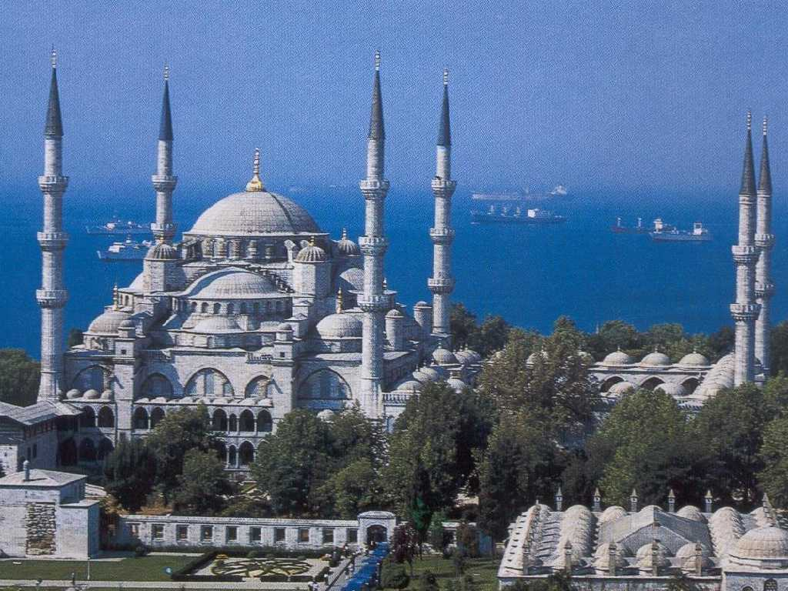
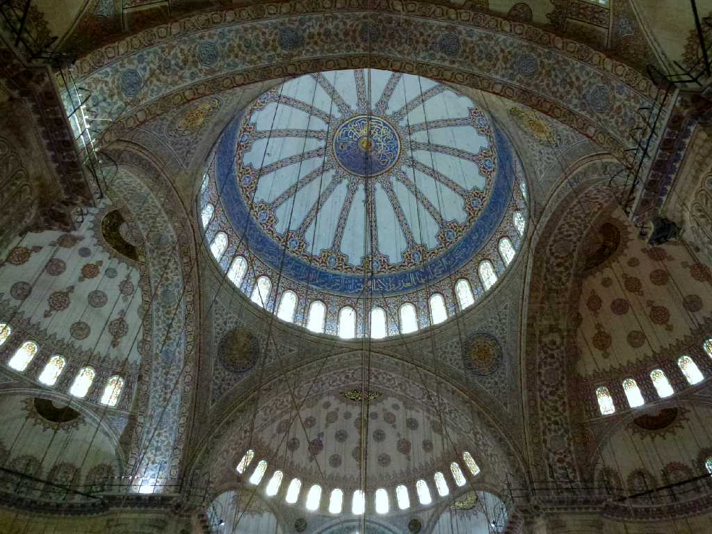
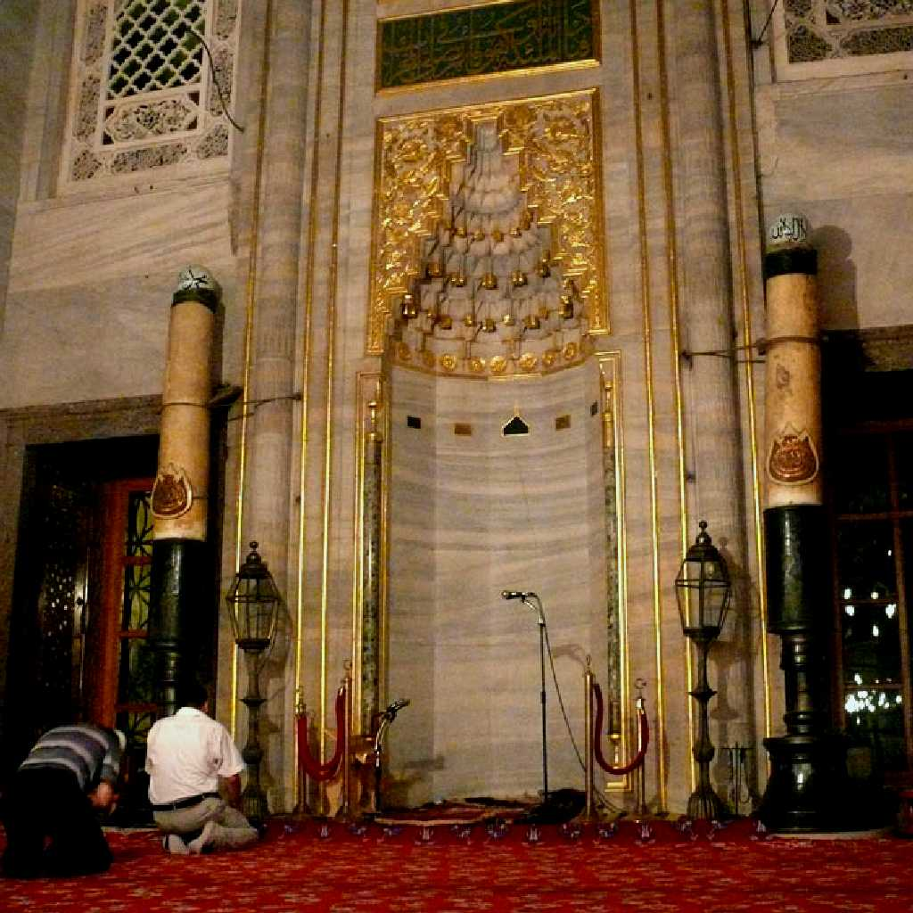
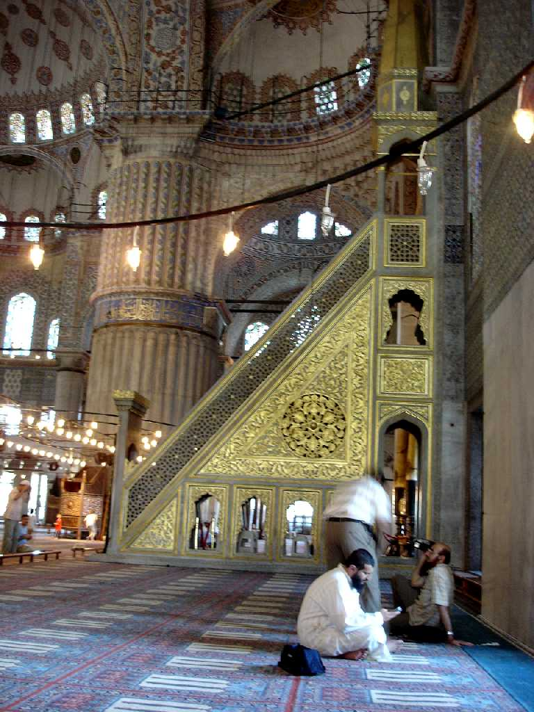
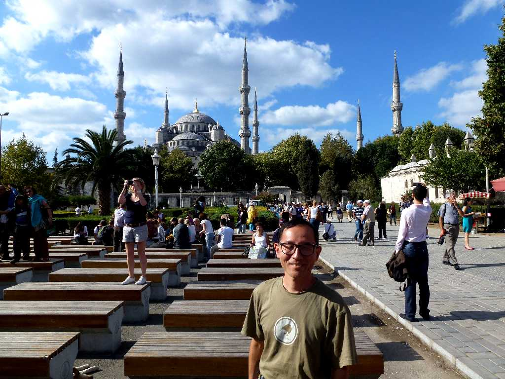

Sultan Ahmet Camii Istanbul
市内に２０００を超えるモスクがあるなか最も有名なのが１６１６年スルタンアフメットⅠ世により完成したミナレットが６本建つモスクで当時はメッカ以外には無かった 後にスルタンはカアバ神殿に７本目のミナレットを寄贈したと云われている 現在カアバ神殿は９本建っている

Blue Mosque
内装が２万枚の青いタイルで装飾されているため別名ブルーモスクと呼ばれている
 
Mihrab Minbar

September 26 2011 Sultan Ahmet Camii